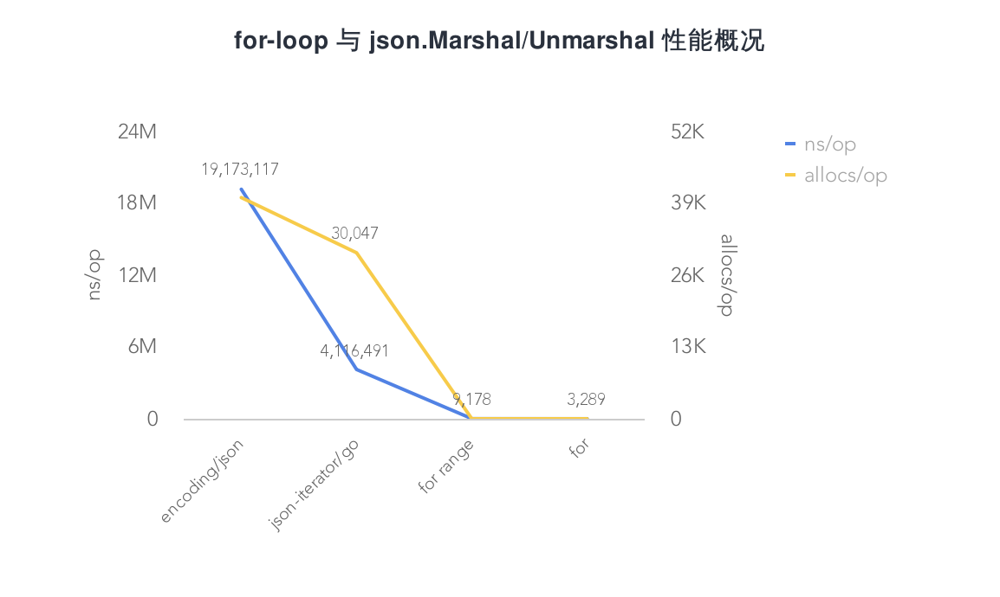

1.7 for-loop 與 json.Unmarshal 效能分析概要
在專案中，常常會遇到迴圈交換賦值的資料處理場景，尤其是 RPC，資料互動格式要轉為 Protobuf，賦值是無法避免的。一般會有如下幾種做法：
- for
- for range
- json.Marshal/Unmarshal
這時候又面臨 “選擇困難症”，用哪個好？又想程式碼量少，又擔心效能有沒有影響啊...
為了弄清楚這個疑惑，接下來將分別編寫三種使用場景。來簡單看看它們的效能情況，看看誰更 “好”
功能程式碼
...
type Person struct {
Name string `json:"name"`
Age int `json:"age"`
Avatar string `json:"avatar"`
Type string `json:"type"`
}
type AgainPerson struct {
Name string `json:"name"`
Age int `json:"age"`
Avatar string `json:"avatar"`
Type string `json:"type"`
}
const MAX = 10000
func InitPerson() []Person {
var persons []Person
for i := 0; i < MAX; i++ {
persons = append(persons, Person{
Name: "EDDYCJY",
Age: i,
Avatar: "https://github.com/EDDYCJY",
Type: "Person",
})
}
return persons
}
func ForStruct(p []Person, count int) {
for i := 0; i < count; i++ {
_, _ = i, p[i]
}
}
func ForRangeStruct(p []Person) {
for i, v := range p {
_, _ = i, v
}
}
func JsonToStruct(data []byte, againPerson []AgainPerson) ([]AgainPerson, error) {
err := json.Unmarshal(data, &againPerson)
return againPerson, err
}
func JsonIteratorToStruct(data []byte, againPerson []AgainPerson) ([]AgainPerson, error) {
var jsonIter = jsoniter.ConfigCompatibleWithStandardLibrary
err := jsonIter.Unmarshal(data, &againPerson)
return againPerson, err
}
測試程式碼
...
func BenchmarkForStruct(b *testing.B) {
person := InitPerson()
count := len(person)
b.ResetTimer()
for i := 0; i < b.N; i++ {
ForStruct(person, count)
}
}
func BenchmarkForRangeStruct(b *testing.B) {
person := InitPerson()
b.ResetTimer()
for i := 0; i < b.N; i++ {
ForRangeStruct(person)
}
}
func BenchmarkJsonToStruct(b *testing.B) {
var (
person = InitPerson()
againPersons []AgainPerson
)
data, err := json.Marshal(person)
if err != nil {
b.Fatalf("json.Marshal err: %v", err)
}
b.ResetTimer()
for i := 0; i < b.N; i++ {
JsonToStruct(data, againPersons)
}
}
func BenchmarkJsonIteratorToStruct(b *testing.B) {
var (
person = InitPerson()
againPersons []AgainPerson
)
data, err := json.Marshal(person)
if err != nil {
b.Fatalf("json.Marshal err: %v", err)
}
b.ResetTimer()
for i := 0; i < b.N; i++ {
JsonIteratorToStruct(data, againPersons)
}
}
測試結果
BenchmarkForStruct-4 500000 3289 ns/op 0 B/op 0 allocs/op
BenchmarkForRangeStruct-4 200000 9178 ns/op 0 B/op 0 allocs/op
BenchmarkJsonToStruct-4 100 19173117 ns/op 2618509 B/op 40036 allocs/op
BenchmarkJsonIteratorToStruct-4 300 4116491 ns/op 3694017 B/op 30047 allocs/op
從測試結果來看，效能排名為：for < for range < json-iterator < encoding/json。接下來我們看看是什麼原因導致了這樣子的排名？
效能對比

for-loop
在測試結果中，for range 在效能上相較 for 差。這是為什麼呢？在這裡我們可以參見 for range 的 實作，偽實作如下：
for_temp := range
len_temp := len(for_temp)
for index_temp = 0; index_temp < len_temp; index_temp++ {
value_temp = for_temp[index_temp]
index = index_temp
value = value_temp
original body
}
透過分析偽實作，可得知 for range 相較 for 多做了如下事項
Expression
RangeClause = [ ExpressionList "=" | IdentifierList ":=" ] "range" Expression .
在迴圈開始之前會對範圍表示式進行求值，多做了 “解” 表示式的動作，得到了最終的範圍值
Copy
...
value_temp = for_temp[index_temp]
index = index_temp
value = value_temp
...
從偽實作上可以得出，for range 始終使用值複製的方式來生成迴圈變數。通俗來講，就是在每次迴圈時，都會對迴圈變數重新分配
小結
透過上述的分析，可得知其比 for 慢的原因是 for range 有額外的效能開銷，主要為值複製的動作導致的效能下降。這是它慢的原因
那麼其實在 for range 中，我們可以使用 _ 和 T[i] 也能達到和 for 差不多的效能。但這可能不是 for range 的設計本意了
json.Marshal/Unmarshal
encoding/json
json 互轉是在三種方案中最慢的，這是為什麼呢？
眾所皆知，官方的 encoding/json 標準庫，是透過大量反射來實作的。那麼 “慢”，也是必然的。可參見下述程式碼：
...
func newTypeEncoder(t reflect.Type, allowAddr bool) encoderFunc {
...
switch t.Kind() {
case reflect.Bool:
return boolEncoder
case reflect.Int, reflect.Int8, reflect.Int16, reflect.Int32, reflect.Int64:
return intEncoder
case reflect.Uint, reflect.Uint8, reflect.Uint16, reflect.Uint32, reflect.Uint64, reflect.Uintptr:
return uintEncoder
case reflect.Float32:
return float32Encoder
case reflect.Float64:
return float64Encoder
case reflect.String:
return stringEncoder
case reflect.Interface:
return interfaceEncoder
case reflect.Struct:
return newStructEncoder(t)
case reflect.Map:
return newMapEncoder(t)
case reflect.Slice:
return newSliceEncoder(t)
case reflect.Array:
return newArrayEncoder(t)
case reflect.Ptr:
return newPtrEncoder(t)
default:
return unsupportedTypeEncoder
}
}
既然官方的標準庫存在一定的 “問題”，那麼有沒有其他解決方法呢？目前在社群裡，大多為兩類方案。如下：
- 預編譯生成程式碼（提前確定型別），可以解決執行時的反射帶來的效能開銷。缺點是增加了預生成的步驟
- 最佳化序列化的邏輯，效能達到最大化
接下來的實驗，我們用第二種方案的庫來測試，看看有沒有改變。另外也推薦大家瞭解如下專案：
json-iterator/go
目前社群較常用的是 json-iterator/go，我們在測試程式碼中用到了它
它的用法與標準庫 100% 相容，並且效能有較大提升。我們一起粗略的看下是怎麼做到的，如下：
reflect2
利用 modern-go/reflect2 減少執行時排程開銷
...
type StructDescriptor struct {
Type reflect2.Type
Fields []*Binding
}
...
type Binding struct {
levels []int
Field reflect2.StructField
FromNames []string
ToNames []string
Encoder ValEncoder
Decoder ValDecoder
}
type Extension interface {
UpdateStructDescriptor(structDescriptor *StructDescriptor)
CreateMapKeyDecoder(typ reflect2.Type) ValDecoder
CreateMapKeyEncoder(typ reflect2.Type) ValEncoder
CreateDecoder(typ reflect2.Type) ValDecoder
CreateEncoder(typ reflect2.Type) ValEncoder
DecorateDecoder(typ reflect2.Type, decoder ValDecoder) ValDecoder
DecorateEncoder(typ reflect2.Type, encoder ValEncoder) ValEncoder
}
struct Encoder/Decoder Cache
型別為 struct 時，只需要反射一次 Name 和 Type，會快取 struct Encoder 和 Decoder
var typeDecoders = map[string]ValDecoder{}
var fieldDecoders = map[string]ValDecoder{}
var typeEncoders = map[string]ValEncoder{}
var fieldEncoders = map[string]ValEncoder{}
var extensions = []Extension{}
....
fieldNames := calcFieldNames(field.Name(), tagParts[0], tag)
fieldCacheKey := fmt.Sprintf("%s/%s", typ.String(), field.Name())
decoder := fieldDecoders[fieldCacheKey]
if decoder == nil {
decoder = decoderOfType(ctx.append(field.Name()), field.Type())
}
encoder := fieldEncoders[fieldCacheKey]
if encoder == nil {
encoder = encoderOfType(ctx.append(field.Name()), field.Type())
}
文字解析最佳化
小結
相較於官方標準庫，第三方庫 json-iterator/go 在執行時上做的更好。這是它快的原因
有個需要注意的點，在 Go1.10 後 map 型別與標準庫的已經沒有太大的效能差異。但是，例如 struct 型別等仍然有較大的效能提高
總結
在本文中，我們首先進行了效能測試，再分析了不同方案，得知為什麼了快慢的原因。那麼最終在選擇方案時，可以根據不同的應用場景去抉擇：
- 對效能開銷有較高要求：選用
for，開銷最小 - 中規中矩：選用
for range，大物件慎用 - 量小、佔用小、數量可控：選用
json.Marshal/Unmarshal的方案也可以。其重複程式碼少，但開銷最大
在絕大多數場景中，使用哪種並沒有太大的影響。但作為工程師你應當清楚其利弊。以上就是不同的方案分析概要，希望對你有所幫助 :)